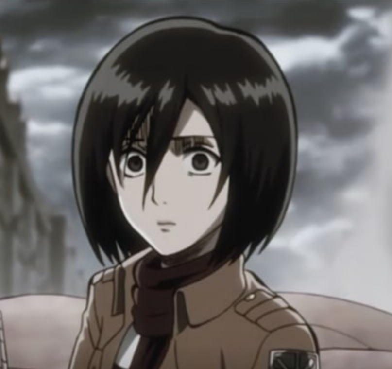
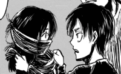
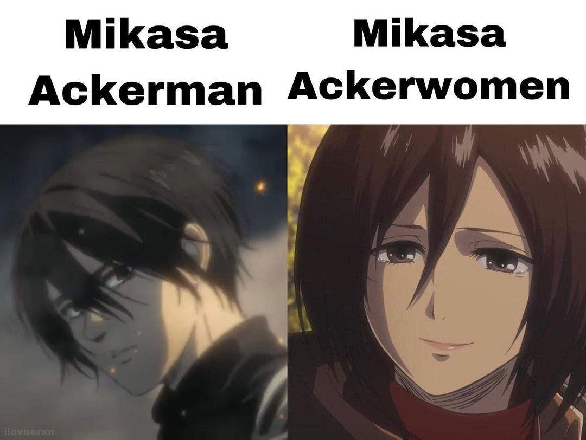
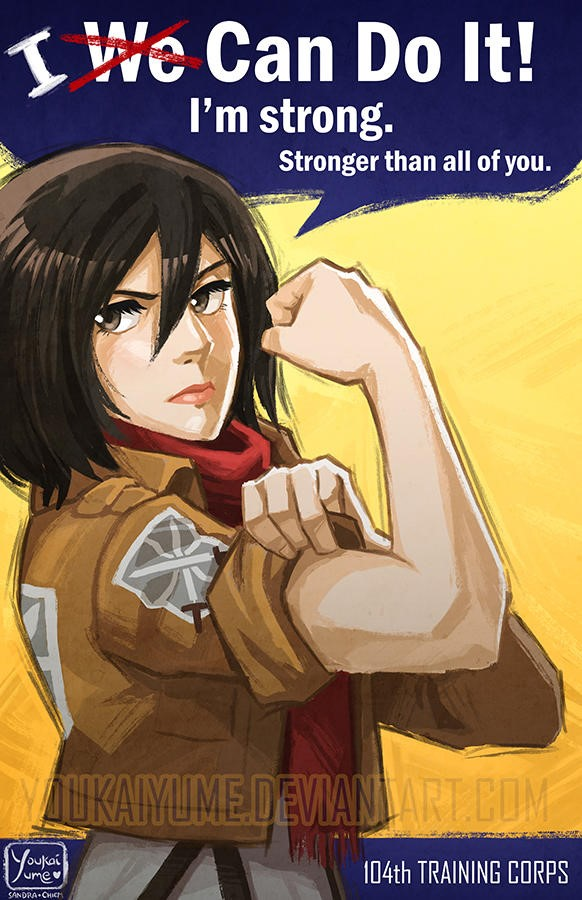
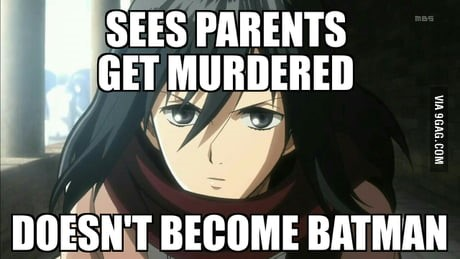
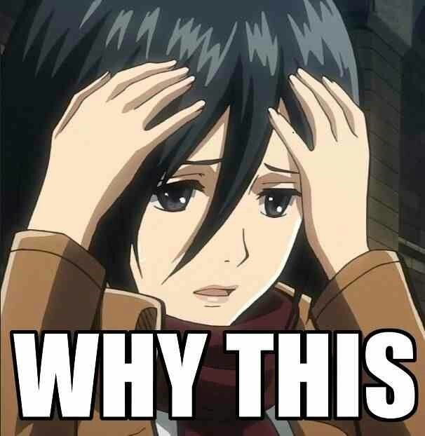
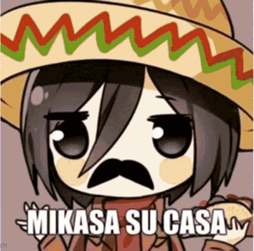
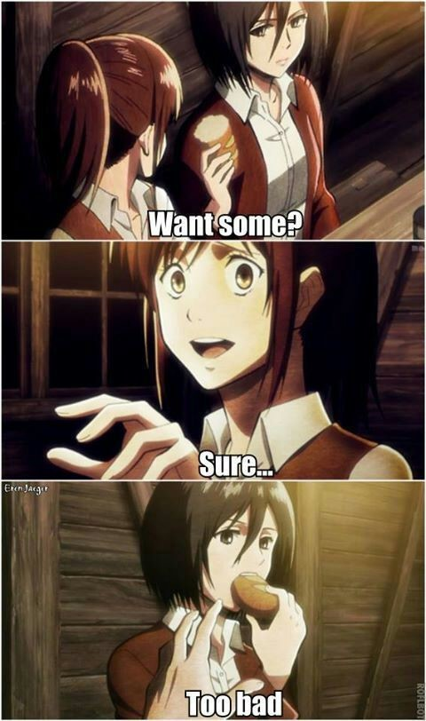

Mikasa Ackerman
Mikasa's appearance
 Mikasa is a fairly tall and well-toned woman. She is of partial Asian heritage, with pale skin, gray eyes, and shaggy black hair that was long until she cut it to chin-length. By the year 854, her hair is shorter and cut up to the back of her neck, though she simultaneously wears noticeably longer bangs. She bears a tattoo of the Azumabito family crest on the outside of her right wrist. There is a small scar below her right eye, which was due to an injury delivered by Eren's Titan during the Battle of Trost District. By 857, Mikasa's hair grew noticeably long and is tied in a ponytail. Mikasa often wears the original Survey Corps uniform, whose equipment is horizontally at her hips, with a white blouse underneath and a black scarf that she almost always wears. She also wears a green cape with the wings of freedom on the back during some missions. When off duty, Mikasa's casual attire consists of a simple knee-length white dress, a light cardigan, brown boots, and her signature black scarf. While in Marley, Mikasa wears a black Survey Corps uniform, which features a breastplate with the Survey Corps symbol; many belts to accommodate all the different gear; support rods around her chest for the gas canister; and tall black boots. She also carries guns, thunder spears, an additional gas tank, and canisters running vertically down her legs.
Mikasa's personality
Before living with the Yeager family, Mikasa appeared to be a cheerful, outgoing, and gentle child. Her innocence allowed her to push anxious thoughts to the back of her mind, continuing to live with her parents and loved ones happily. Growing up, Mikasa has become emotionally withdrawn and noticeably dangerous, sometimes intimidating her enemies or even her comrades. She is quite stoic and level headed, rarely seen to lose her cool or be at a loss of what to do, no matter how bleak the situation seems to be. Her will is remarkably strong, demonstrated when she managed to remain so outwardly calm when Eren was presumed dead; only Armin could tell that she was battling with the pain of losing him. Mikasa cares deeply for her friends and caretakers, seeing them as the last remnants of a family she cannot afford to lose. She also appears to have a soft spot for children, evidenced by her bowing to a young girl she saved and her instantly saving a Marleyan soldier, despite the latter having earlier killed one of her comrades. Mikasa is not completely immune to the effects of her emotions, however: Her strong feelings for her beloved ones, particularly when they are in harm's way, does at times cloud her judgment in furyЧsometimes to the endangerment of herself and others. A notable example was when Mikasa briefly gave in to her grief over Eren's apparent demise and lost the will to live, forgetting her responsibility for the lives of the soldiers she took upon herself to lead in the process. However, she was reawakened by her memories of Eren and a made decision to never give up again, as her memories would die with her.
 From an early age, Mikasa was unusually perceptive, aware of the harshness of nature by witnessing the manner in which predators hunt and kill weaker prey. Her peace was shattered when a band of criminals brutally murdered her parents before her eyes in a failed kidnapping attempt, only saving herself and her rescuer when she managed to abandon all inhibition and hesitation to kill one of her assailants. Following this traumatic event, Mikasa would gain a generally cynical outlook on life and accept the world as a cruel place where only those who are strong are able to survive. Her determination to protect her beloved ones as much as possible has contributed greatly to her phenomenal skills as a soldier. Though being among the best of the best, she remains humble and refrains from putting on airs or displaying arrogance. Mikasa has a strong sense of right and wrong, doing everything she can to make her most impulsive friends follow what she thinks is the right track. In spite of this, she is well aware that she cannot always sway them in decisions and makes it a point to follow them wherever they go, just so that she can be around to help out when trouble arises. The sole reason she enlisted in the military and joined the Survey Corps after her graduation was to keep an eye on Eren, despite the fact that she truly wished to live out the rest of her days in relative peace within the Walls alongside him. Mikasa's bond with Eren is undoubtedly her most important relationship and the one that defines her. Her personality as a teenager was very much influenced by Eren, who told her she stood no chance of survival if she did not fight for it. His words continued to stay with her, and she automatically recalled them to spur her on when she was close to death. Mikasa wears the black scarf Eren gave her when they first met, holding on to it as a source of strength and comfort when she is upset. She had openly wept tears of relief at his safety and developed vengeful grudges towards those who harm him, from enemies to her own superiors. She blushed when it was insinuated she and Eren were lovers; furthermore, after he insulted her and stated that he had always hated her, she was visibly hurt and eventually left behind the scarf he had given her. While she would regain the scarf from Louise, Mikasa would not wear it again until moments before confronting Eren following his initiation of the Rumbling. Mikasa's sacrifice of a life with her beloved Eren and choosing to defy and kill him is ultimately the reason Ymir Fritz was freed and the Titans vanishing from the world. Mikasa grieves for Eren as she visits his grave, and would continue to regularly visit it with her new family for several decades until passing away of old age while wearing the scarf.
Mikasa's history
Mikasa was born to an Asian mother, and her father was a member of the Ackerman clan. She lived peacefully with her parents in the farmlands of Wall Maria, helping them since a young age. Mikasa underwent a painful scarring ritual from her mother, who cut into her skin the mark of their family. Being the last of their race made her mother and Mikasa high value targets to robbers. When she was only 9 years old, a group of traffickers killed her parents and attempted to kidnap her for the purpose of selling her in the human-trading market of the Capital's Underground. Frightened and shocked, Mikasa was rescued by Eren Yeager, the son of her family's doctor. He tricked and killed two of the kidnappers, but he was overwhelmed by the third trafficker and on the verge of being strangled. Eren desperately urged Mikasa to fight to win, who came to realize that the world can be callous and merciless before dispatching the robber from behind, who was trying to kill him. When Grisha Yeager arrived with members of the Military Police Brigade, Mikasa was given the scarf by Eren and accepted into his family. This event awakened the fighting instincts and perfect self-control that runs in the Ackerman clan. Mikasa then went to live with Eren's family until the Fall of Wall Maria.
MEMES
|

|

|

|
|

|

|

|
Best